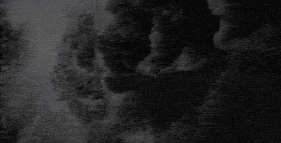
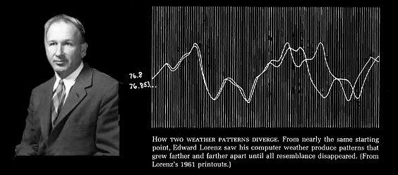
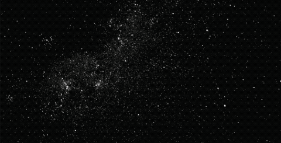

An exploration in mathematics & physics
A Dramatic Demonstration
Amongst tall marble columns, mosaic floors, and breathtaking paintings...
...A brass sphere suspended on a wire takes center stage.
It sways back and forth,
back and forth,
back and forth.
A pendulum.
This one, a replica of Focault's pendulum at the great Pantheon of Paris, was created to demonstrate Earth's rotation. The swinging motion goes in a straight line forever, but as the Earth spins, the direction of the pendulum does too, making the pendulum appear to be rotating.
Even now, nearly 175 years since its first demo, people gather around and watch.
Something about its repetitive sway is hypnotic.
Consistent.
Reliable.
Trustworthiness is why the pendulum became such an integral part of our world.
Its stable rhythm was the heartbeat of every metronome, church tower, and beloved grandfather clock.
Watch it sway.
Pendulums aren't just predictable in practice, but also in principle: Every position leads to exactly one future, something so simple to predict that the math can be done on paper.
This is what Isaac Newton saw in the pendulum's swing. Physical proof that nature has clean, mathematical rules, and obeys them. If you have a pendulum's position and velocity, you can predict where it could be, at any moment in the future, forever.
Within a pendulum, the universe seems to keep its promises.
...That is, until we add another arm.
Same material, same gravity, just one more joint added below the first.
The equations Newton saw in the pendulum still seem to govern every move.
...But what if we invite a twin dancer to the stage?
At first, they move together, with their sway appearing nearly identical over the first few seconds.
Then something shifts, something small, getting gradually bigger over time.
Soon enough, neither bears any semblance to the other, with each following the beat of their own drum.
The rules stayed the same, nothing truly changed other than the tiny, nearly imperceptible difference in where you let the pendulums go.

This is what scientists call
Neither pendulum on its own is random: If you freeze time, each pendulum's immediate next position can be calculated. But to predict one's course of direction forever, you'll need to know the pendulum's starting position with perfect, infinite precision.
Thing being, nothing in the real world allows that.

Edward Lorenz, 1961 — two weather patterns from nearly identical starting points, diverging into utterly different futures.
This is what Edward Lorenz, an American Mathematician and Meteorologist, observed in his work while at MIT. On a primitive computer, he constructed a weather model using differential equations for changes in temperature, pressure, wind velocity, among 9 other variables. The simulation ran continuously, making data that resembled naturally occurring weather patterns.
In January 1961, Lorenz took a shortcut. Instead of starting over to examine an earlier run, he started midway through, manually typing in the numbers himself for the machine's initial conditions from an earlier printout.
Instead of producing a copy of the earlier run, the new run showed dramatically different results, so much so that within a few simulated "months", neither run seemed to resemble the other.
Turns out, six decimal places were stored in the original computer's memory:
0.506127
In the printout, only three decimals appeared, rounded off to save space, which Lorenz entered.
0.506
Lorenz entered the second, assuming a difference in the ten-thousandths couldn't result in any significant consequences.
A mistake in the ten-thousandths.
For scale, this is just 7 drops of water in a full gallon.
The height of a young child compared to Mount Everest.
8.6 seconds of a 24 hour day.

This phenomenon, which Lorenz famously dubbed "The Butterfly Effect", would result in a new branch of physics and mathematics, known as
Where small, tiny, almost imperceptible changes can lead to drastically different and unpredictable consequences.
So, was Newton wrong?
No, his rules hold.
Chaos Theory simply helped scientists understand just how fragile those rules are.